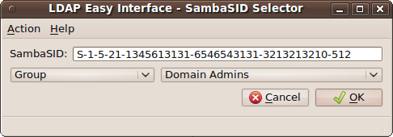
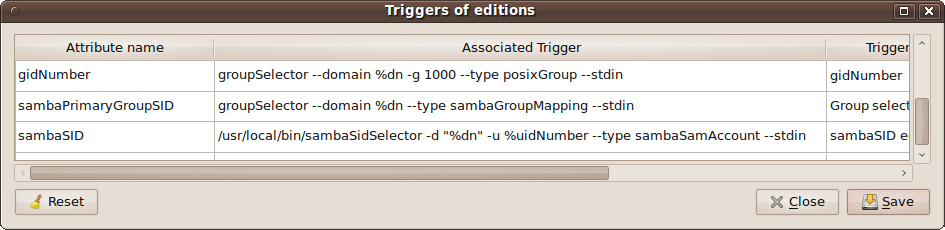
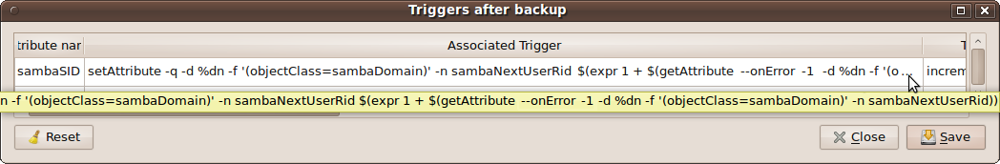
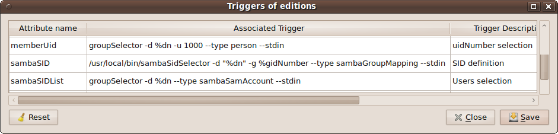
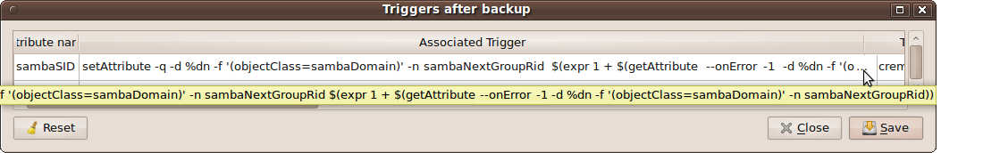
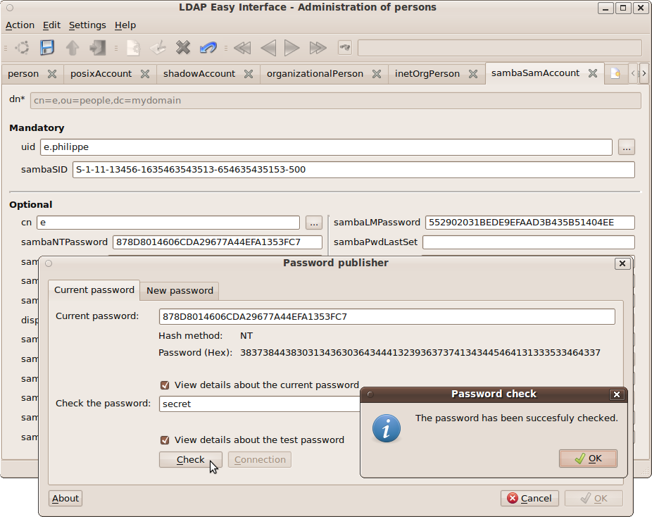
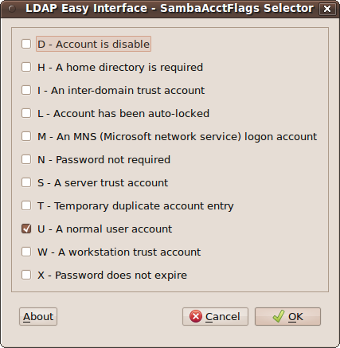
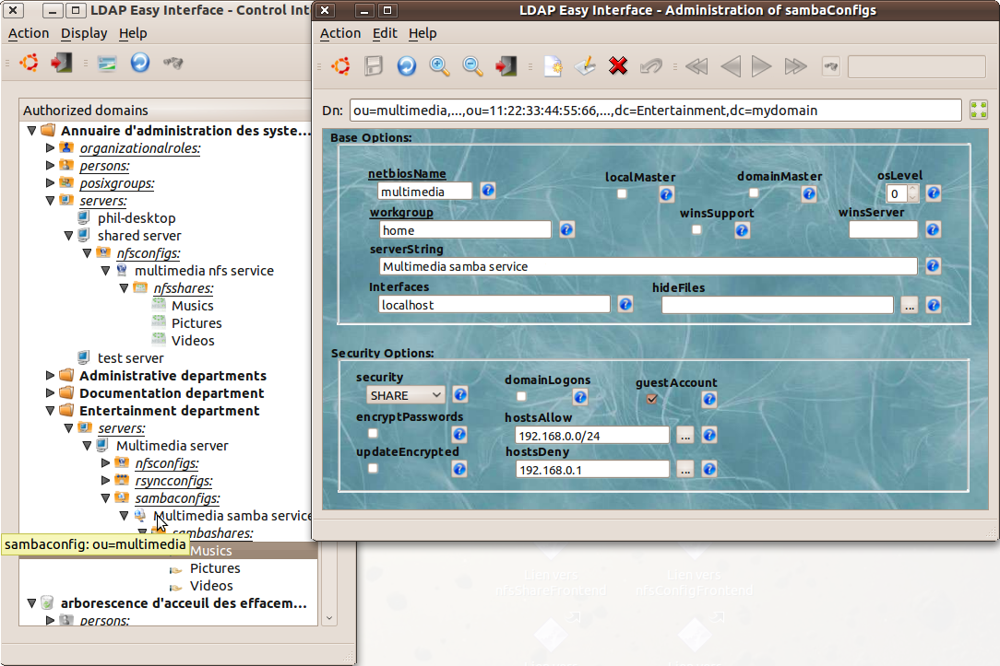
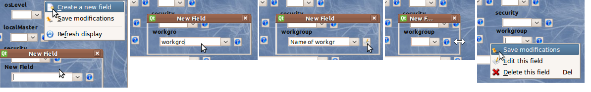

This utility will be used in the interfaces: "
personFrontend" and "
posixGroupFrontend":

Code is
here... (version 0.2 - 20101012)
Syntax: "
sambaSidSelector --domain "dnsDomainName" [--uidNumber #] [--gidNumber #] [-t/--type "sambaSamAccount/sambaGroupMapping/alias"] [--stdin / "currentValue"]"
- The mandatory option "-d/--domain" sets the domain name to search for the "SID" root (a full "dn" can be given, only the "dc=..." value, for the domain name, will be retained).
- The two options, "--uidNumber/-u" and "--gidNumber/-g", define the "id" which allows to calculate the "RID" and the "SID", when "sambaAlgorithmicRidBase" is used in the definition of the "Samba" domain referenced with the previous option "--domain".
- The option "-t/--type" allows to freeze the first menu (comboBox) of the input mask with thr "user" or "group" value, in order to best fit the nature of the information ("SID") entered by the operator...
- a "SID-RID" value passed passée in argument to the command (or: "--stdin/-" for the case of the interfaces: "ldapEasyInterface-Frontend") allows the "sambaSidSelector" utility to display an initial value.
Note: This utility"sambaSidSelector" connects to the LDAP directory with the connect informations of the calling interface (IPC
- shared memory). It can not, in fact, connect itself to the directory to search the
information that will allow it to determine a consistent value of "SID" ; an existing session must already be active from one of the graphical interfaces "ldapEasyInterface"...
Example usage for the admin interface "personFrontend":


Example usage for the admin interface "posixGroupFrontend" :


Note: "
groupSelector" is obtained with: "
ln [-s] sambaSidSelector groupSelector" ...
11.3.1 Utility "ntpassword" for updating the password "samba":
Version 0.2 of the GUI "
slappassword" was changed to version 0.3 (from the projet "
Samba" sources),
to allow editing the "
posix"
passwords, but also to allows editing the two attributes "
sambaLMPassword" and "
sambaNTPassword":

Usage syntax:
ln [-s] /usr/local/bin/slappassword /usr/local/bin/ntpassword
ntpassword
[ (-H/--host "hostname[:port]") / ("anIPCLdapConnectionIsActive") --dn/-d "userDn" [--update] ] [-N/--NTPassword [NThash] ] [-L/--LMPassword [LMhash] ] [--date "secondesSince1970"] [--minLength/-m #] [--stdin / "hashedPassword"]
- The option "--host/-H" allows to indicate the name of the server hosting the LDAP directory (for the connection test and / or the option "--update"). This is optional if an LDAP connection is already active (described in "shared memory") through the GUI "ldapEasyInterface" already running and connected itself.
- The option "--dn/-d": allows to set the DN of the connection ID involved in the check/update of the password. It must be associated to the option "-H" or to an active IPC connection (shared memory).
- The options "-N/--NTPassword" or "-L/--LMPassword allow to limit the hash choice "ComboBox" and therefore the choice used in the new definition of the password. Both options enabled simultaneously restrict the choice to: "LMHash:NTHash".
Furthermore, these two options allow each a hash value that prevails on
the possible parameter passed in standard input (or outside option on
the command line). They also influence the standard output
display of the new validated password.
- The option "--date" sets the reference date (UNIX format: number of seconds since 1970) before which the change of date is not permitted by the input mask.
- The option "--minLength" fixes a minimum length of password (no value -> 5) before possibility of validation.
- The option "--update" clarifies that, when validating, the attributes
"sambaLMPasswd" and/or "sambaNTPassword" will actually be updated in the LDAP directory. This option must be used in conjunction with:
- either, the two options "-H" and "-d" setled,
- either, only the option "--dn", with an active LDAP connection in "shared memory".
- a hash value passed as argument to the command (or to the "--stdin/-" of the process) allows to set the current value of the password (eg, to allow its check).
11.3.2 Pratical application to update fields "samba(LM/NT)Password" of the interface "personFrontend":
The problem that arises here is that one has two attributes (two hashes of the same password) for updating the directory...
Besides the fact that it can be tedious to enter twice (or three if
you include the password "posix") the same password for a single user,
the expected uniqueness is not really guaranteed.
This is not necessarily blocking about the "
posix" password ; this may even be an option on some sites or desired by some users ("Email password"
!= "
samba password").
However, this is a real problem in case of the two différents hashes (
LM/NT) of the same "
samba" password...
Furthermore, if the operator changes a first attribute (eg: "
sambaLMPassword") and then validates the update in the input interface (eg, "
personFrontend"), the attributes "
sambaPwdLastSet" and "
sambaPwdCanChange" will also be updated during this validation, because of the mechanism of the "
trigger on update".
It may be that the operator, realizing that he has forgotten to update the second attribute "
sambaNTPassword",
is then unable to correct the mistake because of the minimum period of passwords validity defined by the domain administrator: sambaMinPwdAge !...
The solution is:
Definitions of Triggers during the editions
|
Attribut Name
|
Associate Trigger
|
Description
|
userPassword
|
slappassword --stdin
|
posixPwd edit
|
sambaLMPassword
|
onlyForYourEyes Edit rather attribute 'sambaNTPassword'
|
No edition
|
sambaNTPassword
|
$(%null=ntpassword
--date 0%sambaPwdCanChange -N -L " %sambaLMPassword:" -m
0$(getAttribute -d "%dn" -n sambaMinPwdLength --scope onelevel -f
'(objectClass=sambaDomain)') --dn "%dn" --update --stdin
$(%sambaPwdLastSet = date "+%%s")) $(%sambaPwdLastSet=date +%%s)
$(%sambaPwdCanChange=expr $(date +%%s) + 0$(getAttribute --domain "%dn"
--name sambaMinPwdAge --scope onelevel -f '(objectClass=sambaDomain)'))
$(%sambaLMPassword=getAttribute -b %dn -n sambaLMPassword) getAttribute
-b %dn -n sambaNTPassword |
NTPwd edition
|
sambaPwdLastSet
|
onlyForYourEyes This data cannot be manually modified
|
Automatic update
|
sambaPwdCanChange
|
onlyForYourEyes This data cannot be manually modified
|
Automatic update |
with:
Definitions of Triggers on Displaying
|
Attribut Name
|
Associate Trigger
|
Description
|
| sambaPwdCanChange
|
date -d @%this "+%%Y-%%m-%%d %%H:%%M:%%S"
|
|
sambaPwdLastSet
|
date -d @%this "+%%Y-%%m-%%d %%H:%%M:%%S"
|
|
Notice:
- the utility "getAttribute" is given by command: "ln -s /usr/local/bin/setAttribute /usr/local/bin/getAttribute"... (see: "setAttribute").
- the utility "ntpassword" is given by command: "ln -s /usr/local/bin/slappassword /usr/local/bin/ntpassword"... (see: "slappassword").
This utility will be used as "
trigger on input" particularly in the interface "
personFrontend" for easy editing the field "
sambaAcctFlags" of the l'objectClass "
sambaSamAccount":

Version 0.1 is
here...
Syntax: sambaAcctFlagsSelector [--stdin / "currentValue"]
Example (menu: "Settings/Triggers definition") in triggers definition for the interface "personFrontend":
On attribute "sambaAcctFlags" : "/usr/local/bin/sambaAcctFlagsSelector --stdin"
Here is an exemple of tree definition ("
LDIF" format) for the
Samba
service which, associated to an entry "
server" in the
LDAP directory will allow to define all the parameters of the config file (
eg: "
/etc/smb.conf" ) of the corresponding physical (or virtual) server..
.
We will define a dynamic interface, customizable
(
creating /
deletig /
positioning /
sizing input fields champs on a desktop - in graphical mode)
by the authorized administrator (see "
sambaConfigFrontend").
It looks like this:

with, for example :
dn: cn=netbiosName,ou=fieldDefinition,ou=sambaConfigFrontend,ou=LdapEasyInterface,ou=ldap,ou=application,dc=mydomain
cn: netbiosName
description: the Netbios Name of the Samba service
l: -1309,-806,0,167,0,1,0
objectClass: LdapEasyInterface
objectClass: applicationProcess
objectClass: top
or:
dn: cn=security,ou=fieldDefinition,ou=sambaConfigFrontend,ou=LdapEasyInterface,ou=ldap,ou=application,dc=mydomain
cn: security
description: the Samba security mode
l: -1303,-562,4,148,1,1,0,SHARE|USER
objectClass: LdapEasyInterface
objectClass: applicationProcess
objectClass: top
Here is the definition, "
LDIF" format,
of the mask example presented above... (
It may / must be completed):
Example of a manual creation procedure for a new input field:

- Creation of a new field by context menu: "right-click on the application desktop",
- Input of the attribute name (to precede a "." if not visible),
- Input of a comment,
- Sizing and positioning of the new field,
- Definition - right-click - of the widget type: lineEdit, checkBox, spinBox, comboBox, listWindow, VLine or HLine,
- Setting of the field properties : "readonly", "enable", "mandatory", "virtual", input of the initial value on "comboBox",
- Backup of the new field definition in the LDAP directory.
Notice: To access this procedure, it is however necessary that the LDAP login account used has the role "
adminMask" (see the "
Help/About Roles" menu...).
Here is the interface for the "
samba" setting:
doSmbConf. Its code is shared with
getHostName.
It can therefore be used as follows:
getHostName --smbconf
or:
ln -s /usr/local/bin/getHostName /usr/local/bin/doSmbConf ; doSmbConf
This program enables the automatic generation (
either triggered by "
cron",
either at start-up procedures of the destination system) of
the SAMBA configuration file from the information (if any) contained in the LDAP database according to the MAC address of the current server (where the command is issued):
doSmbConf -v -U ldap://ldap... >/etc/samba/smb.conf
Note: the option "
--sharesOnly" allows to generate only the shared resources définition.
This permits, for example with the "cron" daemon, a periodic update of the shares options without having to restart all the process "samba" (example below,
nfsdConf).
Example for shell start (/etc/init.d/) for each of the intranet servers to administrate:
...
# previous setting...
...
SMBCONFDIR="/etc/samba"
TMP=/tmp/doSmbConf.$$
NBCONF=$(${BIN}/getHostName --smbconf --number)
I=0; while [ $I -lt 0$NBCONF ] ; do
NETBIOSNAME=$(2>&1 ${BIN}/getHostName --smbconf -#$I >$TMP)
[ $? -eq 0
] && cat <$TMP >$SMBCONFDIR/smb_$NETBIOSNAME.conf
rm -f $TMP
I=$(expr $I + 1)
done
...
# next setting...
...
Example of using this interface on the "test database":
root@me:~/Cdev# doSmbConf --forceMacAddress 11:22:33:44:55:66
multimedia
// Here, it's "stderr"
// Now, it's "stdout"...
# @(#)LdapEasyInterface - Samba - Global Settings:
[global]
guest account = TRUE
hosts allow = 192.168.0.0/24
hosts deny = 192.168.0.1 192.168.0.2 192.168.0.3 192.168.0.4 192.168.0.5
netbiosname = multimedia
oslevel = 33
security = SHARE
server string = serveur de partage multimedia
workgroup = home
# @(#)LdapEasyInterface - Samba - Definitions of Shares:
[music]
browsable = TRUE
comment = Musics
force create mode = 0750
guest ok = TRUE
path = /var/data/musics
read only = TRUE
# @(#)setfacl = -m mask::w
[picture]
browsable = TRUE
comment = Pictures
force create mode = 0750
guest ok = TRUE
path = /var/data/pictures
read only = TRUE
# @(#)setfacl = -m mask::w
[video]
browsable = TRUE
comment = Videos
force create mode = 0750
guest ok = TRUE
path = /var/data/videos
read only = TRUE
# @(#)setfacl = -m mask::w
# @(#)LdapEasyInterface - End -
root@me:~/Cdev# echo $?
0
root@me:~/Cdev#